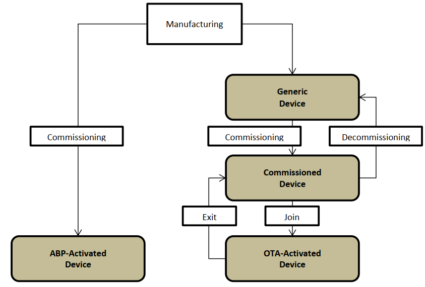
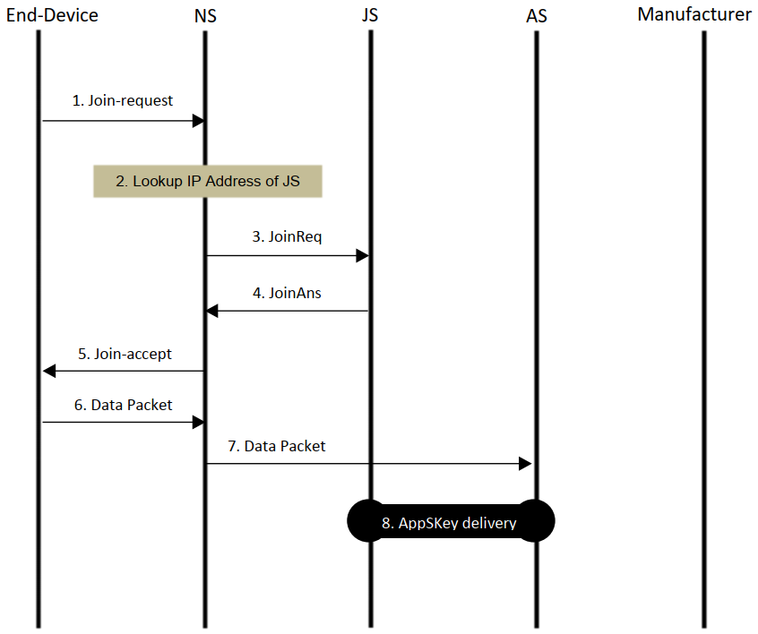

接上一篇。
本部分主要介绍终端状态、激活流程以及停用流程。
4. 终端类型和状态
LoRaWAN 终端设备有两种类型：ABP（Activation-by-Personalization，个性化激活） 激活终端设备，以及 OTA (Over-the-Air，空中激活) 激活终端设备。ABP 终端通过跳过入网过程直接绑定到特定网络，OTA 终端执行入网过程以在选定网络上激活。
图 f3 展示了两种类型终端以及与 OTA 终端设备关联的各种终端设备状态。

f3. 终端类型和状态
一台 ABP 终端设备离开制造商或之后配置时应该（SHALL）具有以下信息： DevAddr 、 AppSKey 、 网络会话密钥（network session keys）。网络会话密钥在 R1.1 (LoRaWAN1.1) 中是 SNwkSIntKey 、 FNwkSIntKey 、 NwkSEncKey ，在 R1.0/1.0.2 （LoRaWAN1.0/1.0.2）中是 NwkSKey。为了使终端设备能够轻松使用网络，其 hNS （Home NS）应该（SHALL）具有 DevAddr 、 网络会话密钥 、 终端设备的 AS 信息；并且 AS 应该（SHALL）具有终端设备的 DevAddr 、 AppSKey 。
一台 OTA 终端设备离开制造商或之后配置时应该（SHALL）具有以下信息： DevEUI 、 NwkKey (仅限 R1.1) 、 AppKey 、 JoinEUI 。此时，它被称为通用终端设备。关联的 JS (Join Server) 应该（SHALL）具有终端设备的 DevEUI 、 AppKey 、 NwkKey （仅限 R1.1）。在被委托（commissioned）之前，NS 或 AS 可能没有关于通用终端设备的任何信息。
在其生命周期中重新配置终端设备。配置和重新配置过程详细内容超出本文档范围。
委托过程将终端设备关联到其 hNS 和特定 AS 。已委托的 OTA 终端设备的 JS 应该（SHALL）具有终端设备的 hNS 信息。与终端设备关联的 AS 应该（SHALL）具有终端设备的 DevEUI 。hNS 应该（SHALL）具有与终端设备及其订阅相关的各种配置文件信息。用于为 AS 、 JS 和 NS 提供所需信息的机制超出本文档范围。
当一个被委托的 OTA 终端设备成功执行了入网（激活）过程，它能知道 DevAddr 、 网络会话密钥和 AppSKey 。JS 能知道 DevEUI 、 DevAddr 、 网络会话密钥 、AppSKey 和 DevNonce 。JS 将 DevEUI 和 AppSKey 交付给 AS 。JS 将网络会话密钥和可选的加密 AppSKey 传递给 NS 。
5. 调试程序（Commissioning Procedure）
调试程序有 AS 、 JS（仅适用于 OTA) 和给定终端设备的 NS 执行。它涉及 JS 将终端设备与 hNS (仅适用于 OTA) 相关联， hNS 和 AS 接收与终端设备及其服务订阅相关的配置文件信息。用于提供关于前述网络元件的所需信息的机制超出本文档范围。
退役程序（Decommissioning Procedure）会破坏终端设备与 hNS 和 AS 之间的关联。此过程涉及在调试时重置在 AS 和 NS 上创建的状态，解除 JS 上的终端设备和 hNS 的绑定（仅适用于 OTA）。
调试和退役程序的细节超出了本规范的范围。
6. 激活 ABP 终端设备
图 f4 展示了具有 NS 的 ABP 终端设备激活。此过程适用于 R1.0 和 R1.1 终端设备和网络。
！Figure 4 Activation of ABP End-Device
f4. 激活 ABP 终端设备
{kind=link}
步骤 0：
终端设备、 NS 和 AS 配置了所需的信息，因此终端设备可以在上电之后立即发送数据包。
步骤 1：
当终端设备具有要发送的应用有效负载（Payload）时，它可以在不执行与网络的的任何设置信令的情况下这样做。数据包包含用 AppSKey 加密的应用有效负载，以及使用网络会话完整性密钥（R1.1 中是 SNwkSIntKey 和 FNwkSIntKey ，否则是 NwkSKey）生成的 MIC 。
当 NS 收到数据包是，它应该（SHALL）根据收到的数据包的 DevAddr 执行网络会话完整性密钥查找。 NS 应该（SHALL）使用检索到的密钥验证 MIC 。如果为找到密钥，或者 MIC 校验失败，则 NS 应该丢弃该数据包。
步骤 2：
NS 应将接收的数据包的加密有效负载发送到与终端设备相关联的 AS 。应用程序有效负载可以伴随元数据，例如 DevAddr 、 FPort 、 时间戳（timestamp）等。 NS 应该（SHALL）考虑从终端设备接收第一个数据包时激活终端设备的 LoRa 会话。
7. 激活 OTA 终端设备
终端设备使用 OTA 激活过程，以便与网络相互认证，并获得授权发送上行链路和接收下行链路数据包。对于终端设备， NS 分成两种。一类是 hNS ，包含终端设备的终端设备信息、服务以及路由配置文件，并在激活后提供面向 AS 和 JS 的接口。提供 hNS 所需配置文件信息的机制超出本文档范围。另一类是 vNS （Visited NS），它与 hNS 之间制定了业务及技术协议以便能够为终端设备提供服务。
激活程序有两种变体，即固定激活（Activation at Home）和漫游激活（Roaming Activation）。
固定激活：终端设备在 hNS 的无线电覆盖范围内执行激活过程。在程序结束时， hNS 时唯一为终端服务的 NS ,用于联系 AS 和 JS 。
漫游激活：终端设备在 hNS 的无线电覆盖范围之外但是在 vNS 的覆盖范围之内执行激活过程。在此过程中， vNS 在 JS 的帮助下取得 hNS 的身份标识，并从 hNS 获得所需的终端设备和服务配置文件。在程序结束时，终端设备由 vNS 和 hNS 提供服务，以便联系 AS 和 JS 。
当终端设备成功执行入网和重新入网的过程时，终端设备被称为与后端进行了 LoRa 会话。每次 LoRa 会话都与终端设备上管理的上下文参数以及 NS 、 JS 和 AS 相关联。（例如，会话密钥、 DevAddr 、 NS 的 ID 等）。当终端设备执行停用（退出）过程或其他成功的入网/重新入网过程时，LoRa 会话终止。
8. 固定激活（OTA Activation at Home Procedure）
图 f5 说明了固定激活流程中的消息流。此过程适用于 R1.0 [LW10,LW102] 和 R1.1 [LW11] 终端设备和网络。

f5. 固定激活流程中的消息流
步骤 1：
终端设备应该（SHALL）发射入网请求（Join-request）消息。
步骤 2：
当 NS 收到入网请求消息， NS 应该（SHALL）按照终端设备的 DevEUI 判断自己是不是 hNS 。在这个流程中假设这个 NS 就是当前终端设备的 hNS 。有关 NS 不是终端设备的 hNS 的情况，请参阅第 12 节，但 NS 配置为使用 JS 进行漫游激活过程。如果 NS 既不是 hNS 也没有配置为使用 JS ，那么这个 NS 应该默默地忽略这条入网请求，程序终止于此。
如果 NS 尚未通过 out-of-band 机制配置 JS 的 IP 地址/主机名， NS 应该（SHALL）使用 DNS 根据收到地 Join-request 消息中的 JoinEUI 来查找 JS 地 IP 地址（参见第 19 节）。如果 DNS 查询失败，那么 NS 应该（SHALL）在此处终止程序。
对于配置了未标识 JS 的 AppEUI 的 R1.0 [LW10] 终端设备， NS 应该（SHOULD）通过 out-of-band 机制配置 JS 的 IP 地址/主机名。
步骤 3：
NS 向 JS 发送 JoinReq 消息，该消息携带 Join-request 消息的 PHYPayload 、 MACVersion 、 DevEUI 、 DevAddr 、 DLSettings 、 RxDelay 和可选的 CFList 。NS 应该（SHALL）将 MACVersion 的值设置为终端设备和 NS 之间的最高通用版本。
步骤 4：
JS 应该（SHALL）根据 MACVersion 处理 Join-request 消息，并将 JoinAns 发送到携带 Result=Success 的 NS ，带有 Join-accept 消息的 PHYPayload、网络会话密钥（在 R1.1 情况下为 SNwkSIntKey 、 FNwkSIntKey 和 NwkSEncKey ，以及在 R1.0/R1.0.2 终端设备的情况下为 NwkSKey）、加密的 AppSKey 或 SessionKeyID 或两者以及成功时的 Lifetime，还有在失败的情况下 Result=UnknownDevEUI 或 MICFailed（例如，如果 JS 无法识别设备，或者 Join-request 的 MIC 未通过校验）。
JS 可以创建与生成的会话密钥相关联的 SessionKeyID 。
为 R1.1 终端设备生成的 SNwkSIntKey ， FNwkSIntKey ， NwkSEncKey 以及 AppSKey 遵循 LoRaWAN1.1 规范 [LW11]。为 R1.0/R1.0.2 终端设备生成的 NwkSKey 遵循 LoRaWAN1.0 规范 [LW10]。当从 JS 传送到 NS 时，使用 JS 和 AS 之间共享的密钥对 AppSKey 进行加密。
对于 R1.0 [LW10] 终端设备，当 AppEUI 未识别 JS 时， JS 也应（SHALL）处理 Join-request 消息。
步骤 5：
如果收到 JoinAns 消息提示成功，则 NS 应该（SHALL）将接收到的具有 Join-accept 消息的 PHYPayload 转发给终端设备。终端设备在接收到 Join-accept 消息时应（SHALL）生成基于 LoRaWAN 规范 [LW10, LW102, LW11] 的网络会话密钥和 AppSKey 。
步骤 6：
当 NS 收到终端设备上行链路的数据包时， NS 应该（SHALL）发送具有加密的 AppSKey 或 SessionKeyID 或两者的应用有效负载给 AS 。
步骤 7：
当 AS 收到加密的 AppSKey 以及应用程序有效负载时， AS 应（SHALL）使用 JS 和 AS 之间共享的密钥解密 AppSKey ，并使用 AppSKey 解密收到的有效负载。如果 NS 未提供加密的 AppSKey ，则 AS 应（SHALL）继续下一步。
步骤 8：
如果 AS 想要直接从 JS 接收 AppSKey ,则执行此步骤。
AS 应该（SHALL）请求由终端设备的 DevEUI 标识的 AppSKey 和来自 JS 的 SessionKeyID 。使用 JS 和 AS 之间共享的密钥加密 AppSKey 。JS 将加密的 AppSKey 、 DevEUI 和 SessionKeyID 发送给 AS 。然后 AS 应该（SHALL）使用 JS 和 AS 之间共享的密钥解密 AppSKey 。然后， AS 开始使用 AppSKey 来加密和解密应用程序有效负载。
无论 NS 和 JS 属于统一管理域还是它们属于两个单独的管理域时，都可以对委托的终端设备进行 OTA 激活。
9. OTA 终端设备的停用（退出）
OTA 激活的终端设备的 LoRa 会话也可能因各种原因而终止。例如用户合同到期、恶意终端设备行为等。用于停止会话的过程时退出程序（Exit Procedure)，它是入网程序的对立部分（counter-part）。
没有用于执行退出过程的明确且专用的 LoRaWAN 信令。假设终端设备和后端依赖于应用层信令来执行该过程。触发器和应用层信令的实现细节超出本文档范围。
当 AS 通知了 hNS 执行退出过程时还存在单独的 sNS 时， hNS 应（SHALL）执行切换漫游停止过程（Handover Roaming Stop Procedure)以将 LoRaWAN 会话的终止传达给 sNS 。
成功执行新的入网/重新入网过程的终端设备也终止当前的 LoRaWAN 会话，并且在某种程度上，它可以被视为停用（Deactivation）关联该会话。
10. 安全关联
表 t1 显示 LoRaWAN 部署使用的完全关联。一些必须的安全关联将在 LoRaWAN 规范中详细说明，有些则留给部署。
| 终点（End-points） | 类型 | 是否属于 LoRa 规范 | 用途 | 生成于（若动态） | 密钥名称 |
|---|---|---|---|---|---|
| ED-JS | 静态 | 范围内 | 保护 Join/Rejoin | - | AppKey, NwkKey |
| ED-NS | 动态 | 范围内 | 保护 OTA 帧递交 | Join 过程 | SNwkSIntKey, FNwkSIntKey, NwkSEncKey, NwkSKey |
| ED-AS | 动态 | 范围内 | 保护端对端帧负载的递交 | Join 过程 | AppSKey |
| JS-NS | 静态 | 超范围 | 保护 Join/Rejoin 以及会话密钥传递 | - | - |
| AS-JS | 静态 | 范围内 | 保护 AppSkey 传递 | - | ASJSKey |
| AS-JS | 静态 | 超范围 | 委托/退役 | - | ASJSKey |
| JS-Manufacturer | 静态 | 超范围 | 保护 AppKey/NwkKey 传递 | - | - |
| NS-NS | 静态 | 超范围 | 保护 Join/Rejoin 以及 NS 间帧传递 | - | - |
t1. LoRaWAN 安全关联